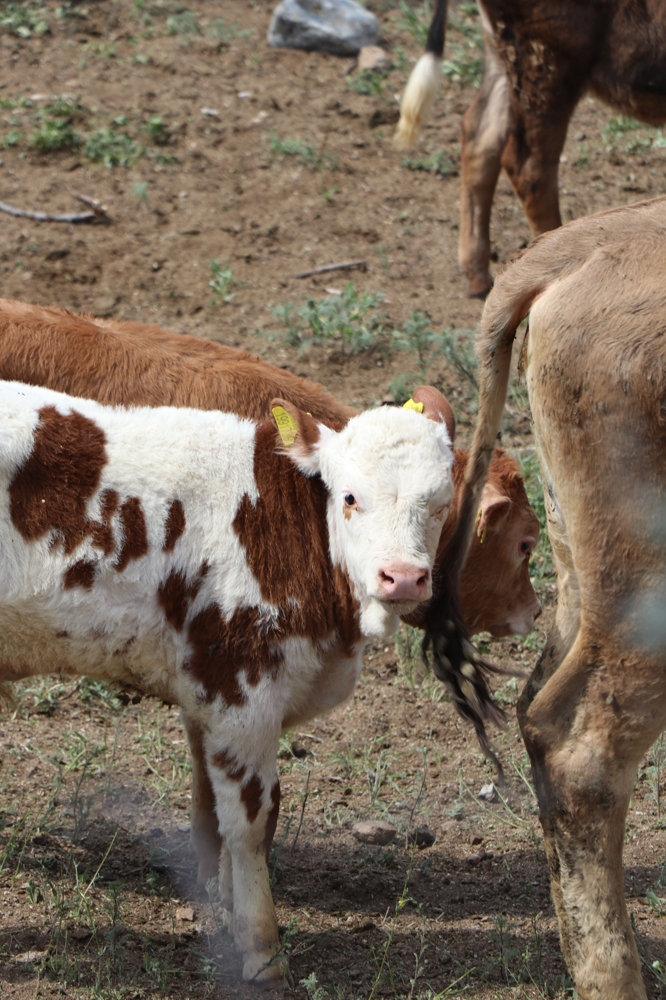

ACADEMIC GRANT PROPOSAL
Livestock-related risk factors for laboratory-confirmed human brucellosis in northern Kenya
A proposed case-control study investigating livestock-related risk factors associated with laboratory-confirmed human brucellosis among patients presenting with prolonged febrile illness in northern Kenya.

ACADEMIC CONTEXT
Developed through postgraduate study
This academic research proposal was developed as part of postgraduate study at the University of Edinburgh.
Project overview
Brucellosis remains an important zoonotic disease in pastoralist communities, where close interactions between people and livestock may create multiple opportunities for transmission. The proposal was developed to address an evidence gap around the specific livestock-related exposures associated with laboratory-confirmed human brucellosis in northern Kenya.
Research question
Which livestock-related exposures are associated with laboratory-confirmed human brucellosis among patients presenting with prolonged febrile illness in northern Kenya?
Hypothesis
Individuals with frequent livestock-related exposures have a higher risk of laboratory-confirmed human brucellosis than individuals without such exposures among patients presenting with prolonged febrile illness.
Proposed study design
The proposed research uses a case-control design. Cases would include adults presenting to selected healthcare facilities with prolonged febrile illness and laboratory-confirmed brucellosis. Controls would be recruited from the same healthcare facilities and study period and would consist of patients with prolonged febrile illness who test negative for brucellosis.
Cases and controls would be recruited consecutively, with an approximate 1:2 case-to-control ratio to improve statistical power while maintaining feasibility.
Key exposures
The proposed study would examine livestock-related exposures including livestock ownership, assisting animal births, handling aborted materials, milking, slaughtering, contact with sick animals and consumption of raw milk.
Data collection approach
Cases and controls would be interviewed using the same standardised questionnaire. Data collection would cover demographic characteristics, livestock-related exposures and potential confounders including age, sex, education, occupation, household characteristics, access to veterinary services and previous medical history.
Interviews would be conducted in participants' preferred languages with trained interpreters where necessary. Clinical and laboratory information would also be extracted using standardised procedures.
Proposed analysis
Descriptive statistics would summarise participant characteristics and exposure frequencies. Univariable logistic regression would first examine associations between individual livestock-related exposures and laboratory-confirmed brucellosis.
Multivariable logistic regression would then be used to estimate adjusted odds ratios while accounting for potential confounders such as age, sex, occupation, education and livestock ownership.
Addressing potential bias
The proposal considers key sources of bias common to case-control studies, including selection bias, recall bias and misclassification. Cases and controls would be recruited from the same healthcare facilities during the same study period, while standardised questionnaires, interviewer training and laboratory-based case classification would support consistent measurement.
Potential contribution
If implemented, the study could generate epidemiological evidence on modifiable livestock-related risk factors for human brucellosis in northern Kenya. The findings could inform community education, safer livestock management, veterinary service access and broader One Health prevention strategies.